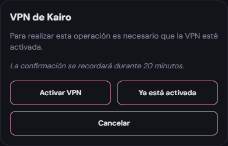
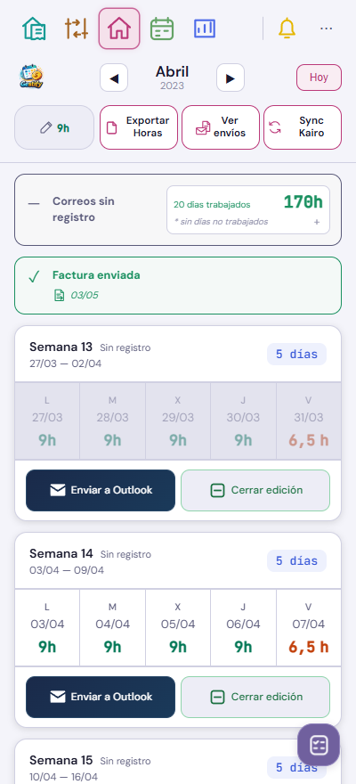
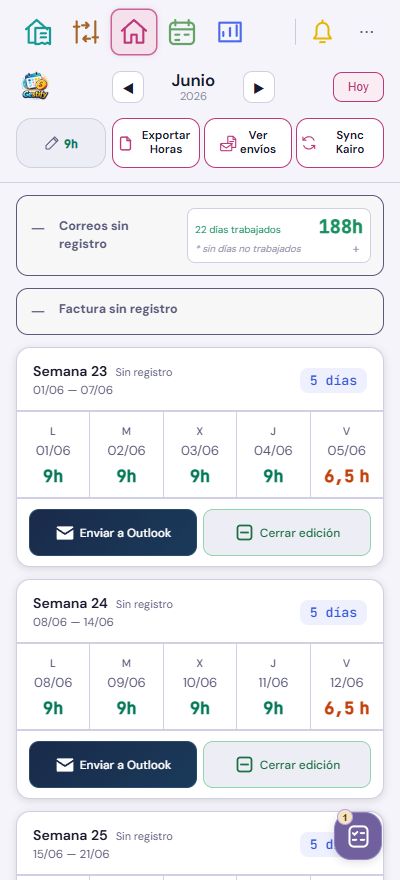

VPN e histórico · v545
Capturas de Gestify con datos ficticios. La confirmación de VPN dura 20 minutos. Cancelar no se recuerda.




Sync Kairo incorpora el histórico consolidado. Cambiar de mes o recargar reutiliza esa copia. Las fechas no se deducen del día previsto de envío; se conservan los hechos actuales y las programaciones.
Se descarta el registro local de MacroDroid. No se han enviado ni programado correos durante esta validación. El webhook real del móvil se probará desde Vivo Sesiones cuando esté disponible.